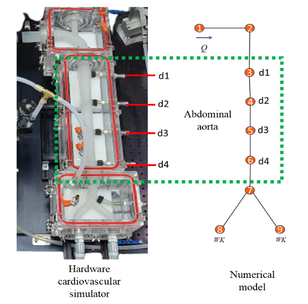
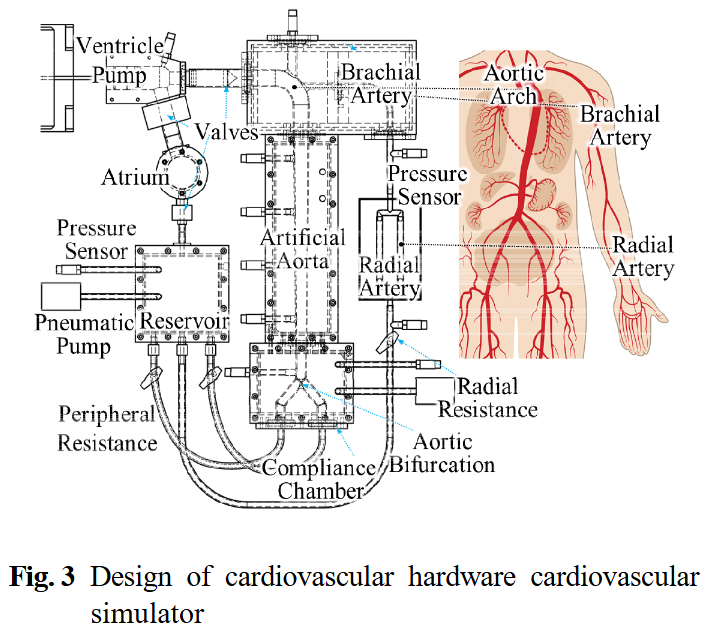
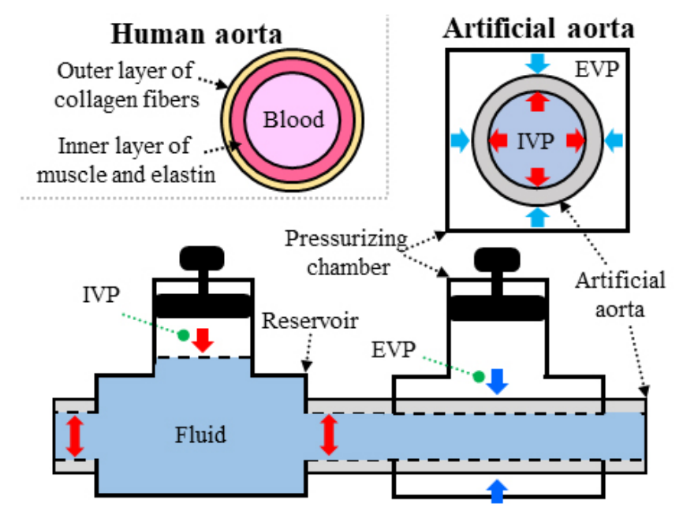
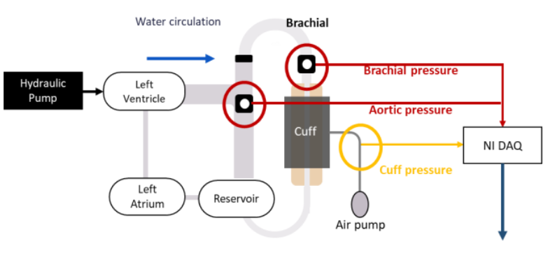
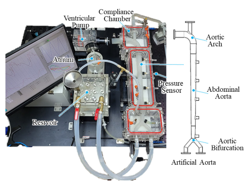
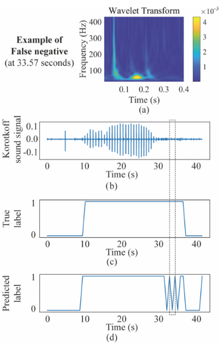
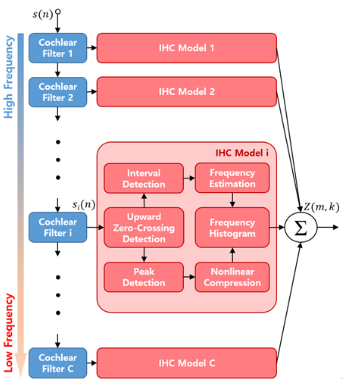

Publications
Domestic Journal

- Publications
- >
- Domestic Journal
Domestic Journal
[15]

15. 혈류역학 기반 1-D Flow Model을 이용한 복부 대동맥에서의 인체 맥파 전파 과정 재현 (View)
Reproduction of Pressure Wave Propagation in the Abdominal
Aorta using a Hemodynamic-based 1-D Flow Model
Junki Hong, Jae-Hak Jeong, Bomi Lee, Changhee Min, Yong-Hwa Park,
Transactions of the Korean Society for Noise and Vibration
Engineering(KSNVE), Vol. 34, No. 4, 2024.08, pp. 369-373
[첨부파일][14]

14. 심혈관계 시뮬레이터를 이용한 중심-상완 혈압 파형 재현 (View)
Reproducing Central-brachial Blood Pressure Waveforms using
a Cardiovascular Simulator
Jae-Hak Jeong, Yong-Hwa Park,
Transactions of the Korean Society for Noise and Vibration
Engineering(KSNVE), Vol. 34, No. 3, 2024.06, pp. 295-301
[첨부파일][13]

13. 혈압 파형 재현을 위한 인공 대동맥 기반 모의 순환계 로봇 (View)
Mock Circulatory Robot with Artificial Aorta for Reproduction of Blood Pressure Waveform
Jae-Hak Jeong, Yong-Hwa Park,
The Journal of Korea Robotics Society, Vol. 19, No. 2,
2024.04, pp. 221-228
[첨부파일][12]

12. 대동맥 압력과 커프 오실로메트릭 신호 사이의 동적 시스템
모델링을 통한 대동맥 압력 파형 추정 (View)Estimation of Aortic Pressure Waveform via Dynamic System Modeling
between Aortic Pressure and Cuff Oscillometric SignalHong Junki, Jeong Jae-Hak, Lee Bomi, Changhee Min, Yong-Hwa Park,
Transactions of the Korean Society of Mechanical Engineers, A,
Vol. 48, No. 4, 2024.04, pp. 285-288
[첨부파일][11]

11. 혈압 파형과 크기의 재현을 위한 심혈관계 시뮬레이터 (View)
A Cardiovascular Simulator for the Reproduction of Blood Pressure
Waveform and Magnitude
Jae-Hak Jeong, Bomi Lee, Junki Hong, Changhee Min, Yong-Hwa Park,
Journals of the Korean Society of Mechanical Engineers A,
Vol. 47, No. 8, 2023.08, pp. 627-633,
[첨부파일][10]

10. 웨이블릿 변환과 CNN을 활용한 코로트코프 음의 인식 (View)
Detection of Korotkoff Sounds Using Wavelet Transform and CNN
Bomi Lee, Changhee Min, Jae-Hak Jeong, Junki Hong, Yong-Hwa Park,
Journals of the Korean Society of Mechanical Engineers B,
Vol. 47, No. 8, 2023.08, pp. 423-427
[첨부파일][9]

9. 달팽이관 필터뱅크 및 ZCPA 청각모델에 기반한 두 귀의 시간차 추정기법 (View)
Estimation of Interaural Time Difference based on Cochlear
Filter Bank and ZCPA Auditory Model
Gyeong-Tae Lee, Yong-Hwa Park, Journals of the Korean Society
for Noise and Vibration Engineering,
Vol. 29, No.6, 2019.12, pp. 722-734
[첨부파일][8]
8. Yong-Hwa Park, Yong-Chul Cho, Jang-Woo You, ChangYoung Park, Heesun Yoon, Sang Hun Lee, Jong Oh Kwon, Seung Wan Lee, “3D Camera with Solid-State Shutter for Full HD Depth Image Capturing,” Samsung Journal, Giheung, Korea, November 10, 2011. (삼성논문상 은상 수상, Annual CTO Award)
[7]
7. Hee-Moon Jeong, Yong-Hwa Park, Jin-Ho Lee, Hyunku Jeong, Seok-Jin Kang, Yong-Chul Cho, Woohyek Choi and Seok-Mo Chang, “A Compact Electromagnetic Optical Scanner for Mobile Display,”Samsung Journal, Giheung, Korea, November 15, 2007.
[6]
6. Jin-Woo Cho, Yong-Hwa Park, Young-Chul Ko, Byeung-Leul Lee, Seok-Jin Kang, Seok-Whan Chung, Won-kyoung Choi, Yong-Chul Cho, Seok-Mo Chang, Jin-Ho Lee, and John Sunu, “Electrostatic 1D Micro Scanner with Vertical Combs for HD Resolution Display” Samsung Journal, Giheung, Korea, November 7, 2006.
[5]
5. Yong-Hwa Park and Wan-Sup Cheung, "Experimental Investigation on the Transmission of Seat Vibration to the Head for Korean-Seated Postures,” Journal of the Korean Society for Noise and Vibration Engineering, Vol. 11, No. 1, 2001, pp. 76-81.
[4]
4. Yong-Hwa Park, Wan-Sup Cheung, and Youn-sik Park, “Structural Modification for Vehicle Interior Noise Reduction Using Vibration Response Sensitivity Analysis,” Journal of the Acoustical Society of Korea, Vol.19, No.3, September 2000, pp. 3-11.
[3]
3. Yong-Hwa Park and Wan-Sup Cheung, “Experimental Investigation on the Characteristics of Dynamic Masses of Korean-Seated Postures,” Journal of the Korean Society for Noise and Vibration Engineering, Vol. 10, No. 6, 2000, pp. 1017-1021.
[2]
2. Yong-Hwa Park, Wan-Sup Cheung, and Youn-sik Park, “Selection of Optimal Supporting Position to Maximize Natural Frequency of the Structure Using Frequency Response Function,” Journal of the Korean Society for Noise and Vibration Engineering, Vol. 10, No. 4, 2000, pp.648-654.
[1]
1. Wan-Sup Cheung, Yong-Hwa Park and M. J. Griffin, “Comparison and Analysis of Standardized Methods for Predicting the Hazards of Whole-body Vibration and Repeated Shocks,” Journal of the Korean Society for Noise and Vibration Engineering, Vol. 10, No. 1, 2000, pp.160-167.